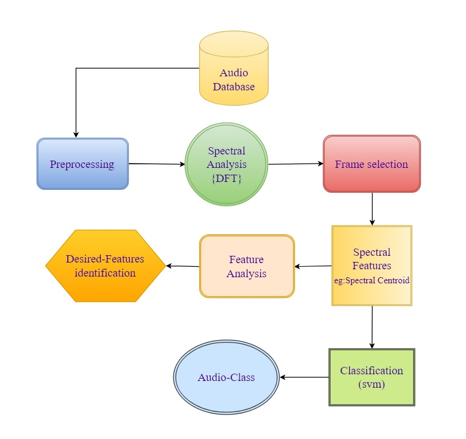
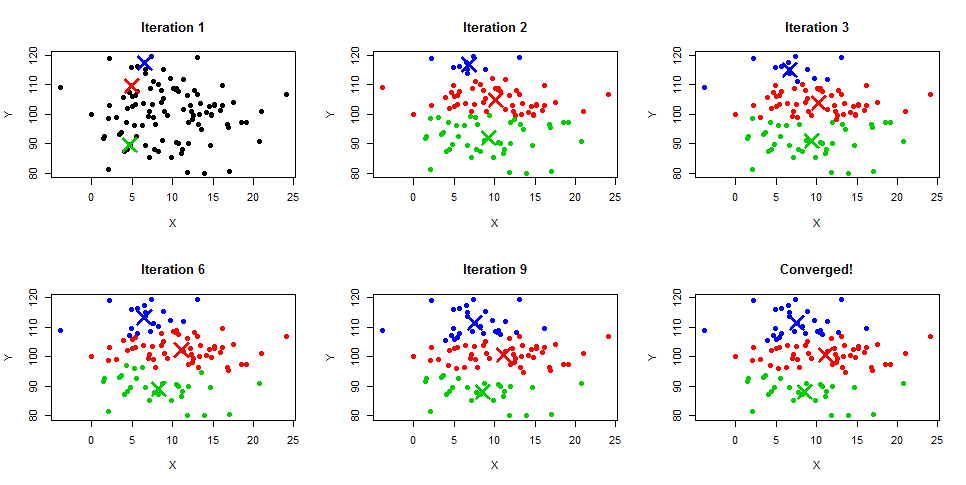
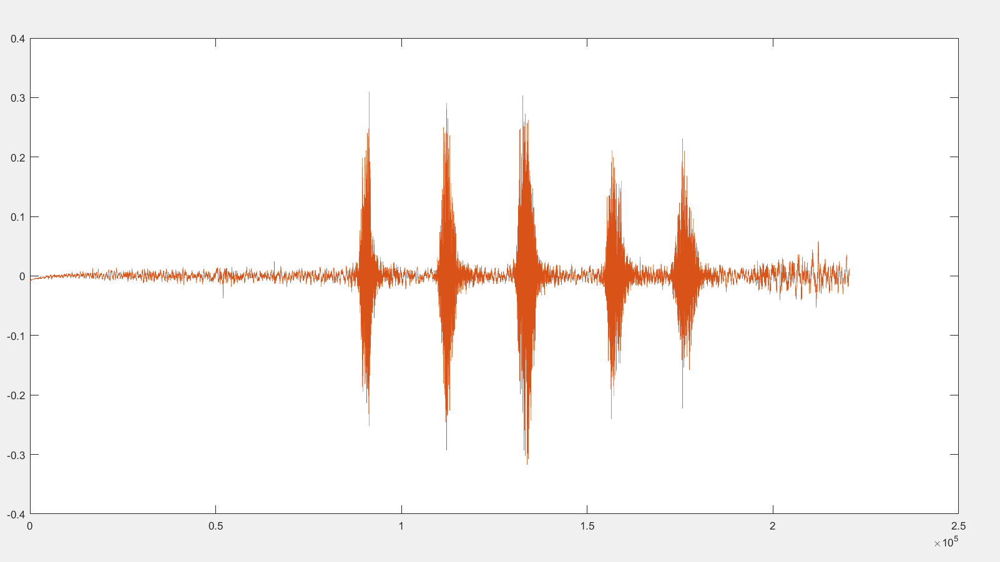
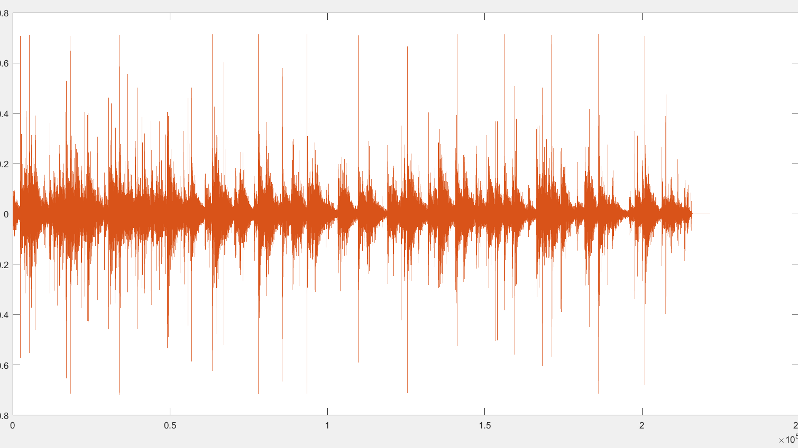
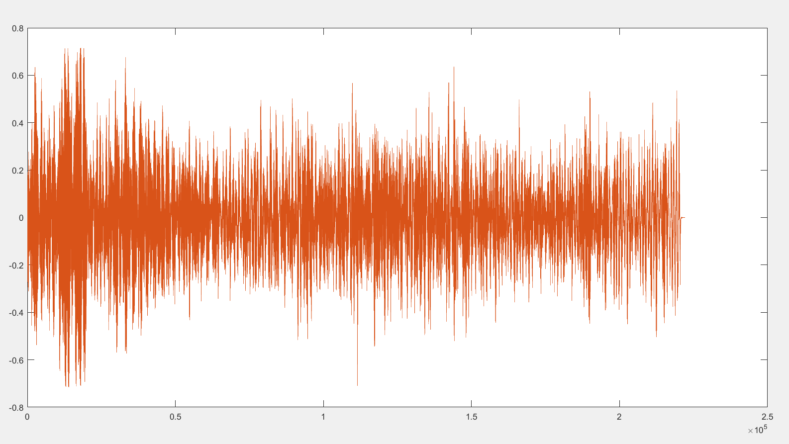
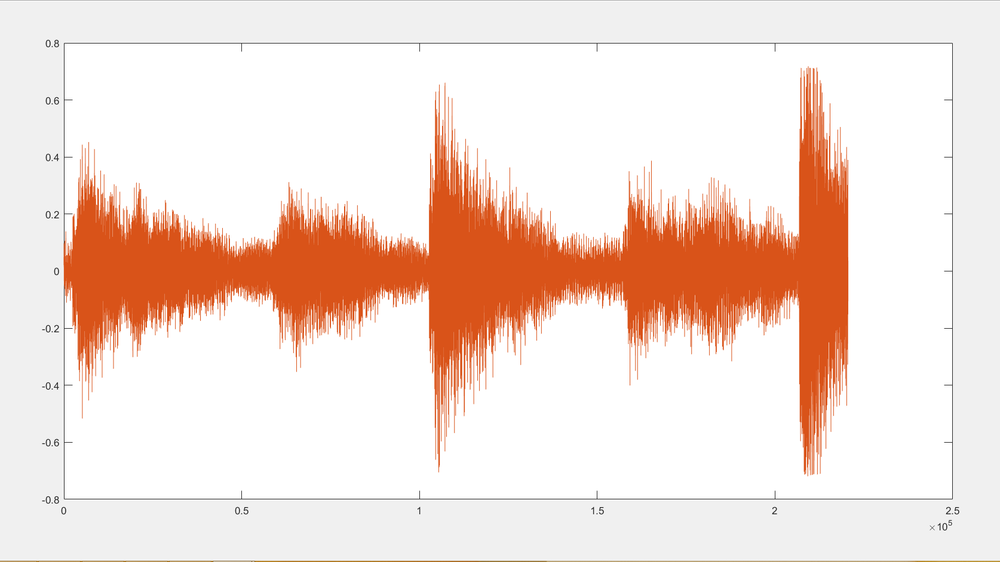
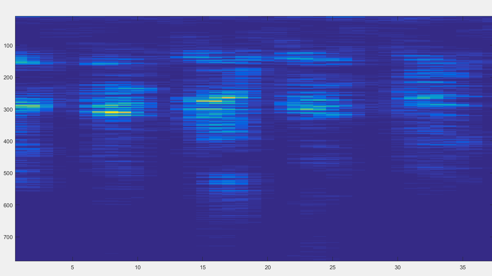
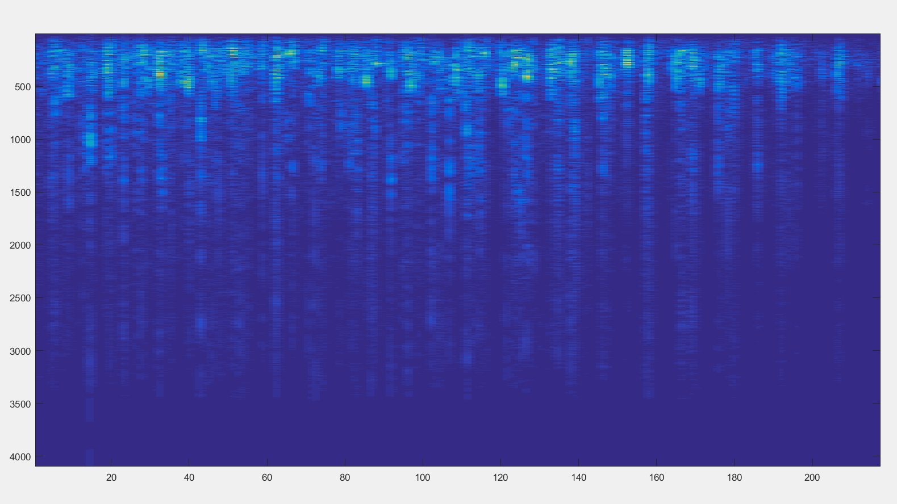
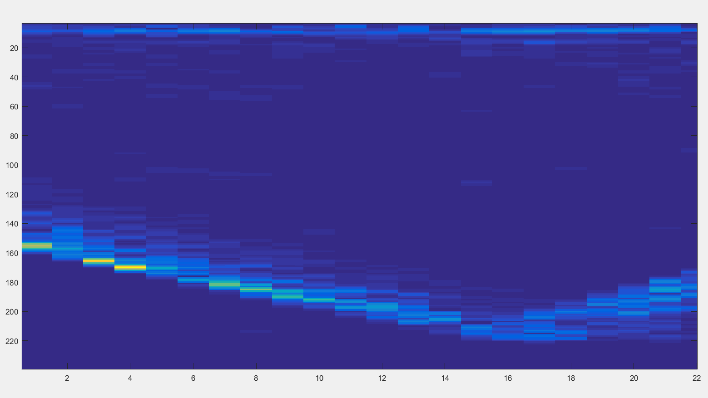
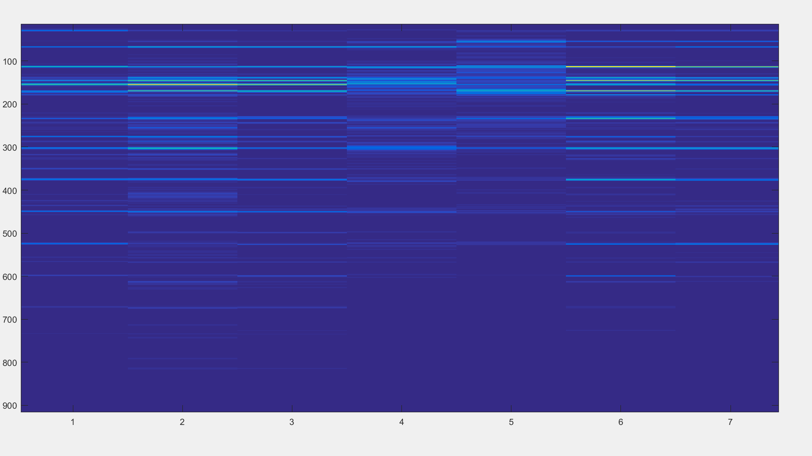

NON-SPEECH AUDIO CLASSIFICATION
Abstract
One of the obstacles in research activities concentrating on environmental sound classification is the scarcity of suitable and publicly available datasets
.The project provides an evaluation of human accuracy in classifying environmental sounds and compares it to the performance of selected baseline classifiers using features derived from DFT.
1. Introduction
Main aim of the project is to identify audio features suitable of differentiating non speech audio signals majorly environmental and urban sounds. Preferred audios we have used are ambient noises from an urban environment.The number of different audio classes we have been working are of four categories.It's applications are in various ways such as building an audio device which can identify or detect the external objects like identifying a car among several vehicles in traffic and differentiating it to that of chirping of birds or lot of other sounds.
1.1 Introduction to Problem
Classification of various kinds of urban,environmental sounds using clustering is the main goal to be accomplished in this project.Audio data is pre-emphasised prior to proceeding to windowing.Spectrograms of each clip are used to find desired spectral features that are useful for classification.Optimal accuracy is reached further through K-means clustering
1.2 Figure

1.3 Literature Review
This project includes details on sound digitization,transforms,structure of environmental sounds from a human perspective.This project will cover the area of non-speech environmenal sound classification by analysis of non speech sound recognition techniques.A comparitive analysis is also made in identifying those speech and sound recognition techniques that can be used in non speech sound recognition.It explains about the time-frequency techniques and their applicability to the domain.
Selina Chu, Shrikanth Narayanan, and CC Jay Kuo, “Environmental sound recognition with time–frequency audio features,” IEEE Transactions on Audio, Speech, and Language Processing,vol. 17, no. 6, pp. 1142–1158, 2009.
1.4 Proposed Approach
Initially the main task of this approach is to gather a huge dataset of several kinds of environmental sounds like urban sounds,domestic sounds etc.More preferably these samples of dataset are pre-emphasised by removing noise,silence and other sort of distortions.These preprocessed dataset is used to extract the features that will be able classify the selected audio classes of non speech sounds.Feature extracted so are then used as inputs to the for the part of classification through clustering of those chosen classes.Accuracy of this classification is verified and improved further to get better way of identifying our classes
1.5 Report Organization
Features Extraction:
1.Spectral slope
is a measure of voice quality .Perceptually, voice qualities include harsh, tense, breathy, creaky voice and whisper . Reflected in the intensity of the harmonics and more generally in the shape of the power spectrum
2.Spectral skewness
computes the coefficient of skewness of a spectrum.Skewness(the third central moment) measures the symmetry of the distribution.Asymmetrical distribution has skewness of zero.The coefficient of skewness is the ratio of the skewness to the standard deviation raised to the third power
3.Spectral Rolloff Point
A feature extractor that extracts the Spectral Rolloff Point. This is a measure of the amount of the right-skewedness of the power spectrum. The spectral rolloff point is the fraction of bins in the power spectrum at which 85% of the power is at lower frequencies
4.Spectral flux
is a measure of how quickly the power spectrum of a signal is changing, calculated by comparing the power spectrum for one frame against the power spectrum from the previous frame
5.Spectral flatness
or tonality coefficient, also known as Wiener entropy, is a measure used in digital signal processing to characterize an audio spectrum. Spectral flatness is typically measured in decibels, and provides a way to quantify how noise-like a sound is, as opposed to being tone-like
6.The spectral centroid
is a measure used in digital signal processing to characterise a spectrum. It indicates where the "center of mass" of the spectrum is. Perceptually, it has a robust connection with the impression of "brightness" of a sound.

7.The spectral Kurtosis
gives a measure of flatness or spikiness of a distribution relative to a normal distribution.It is computed from the fourth central moment.A kurtosis value of 3 means the distribution is similar to a normal distribution where as value less than 3 is flatter distribution and greater than 3 is steeper distribution.
k-means clustering algorithm
k-means is one of the simplest unsupervised learning algorithms that solve the well known clustering problem. The procedure follows a simple and easy way to classify a given data set through a certain number of clusters (assume k clusters) fixed apriori. The main idea is to define k centers, one for each cluster. These centers should be placed in a cunning way because of different location causes different result. So, the better choice is to place them as much as possible far away from each other. The next step is to take each point belonging to a given data set and associate it to the nearest center. When no point is pending, the first step is completed and an early group age is done. At this point we need to re-calculate k new centroids as barycenter of the clusters resulting from the previous step. After we have these k new centroids, a new binding has to be done between the same data set points and the nearest new center. A loop has been generated. As a result of this loop we may notice that the k centers change their location step by step until no more changes are done or in other words centers do not move any more. Finally, this algorithm aims at minimizing an objective function know as squared error function given by:

3. Experiments & Results
3.1 Dataset Description
Coming to the dataset ,audio dataset used are collected from the urban areas.These audios were clipped and preprocessed initialy .We further used 4 classes/labels like dog, clapping,churchbells,sirens.Most of these samples are stereo recordings, sampled at 44000 hz.Each of these were brought down to a single(mono) channel, at 22050 hertz to reduce the amount of data processed.In all the classes each audio file was of a duration of 5 seconds and the total number of samples used for training purposes was a little north of 160. All the audio files were noiseloss wav files without any sort of silence.
Link to our dataset & code
environmental sound classification Dataset&Code
3.2 Discussion
These features of each audio clip is stored row wise.A total number of 80 test audio signals,20 from each are each class are used for feature extraction.So totally an 80×11 matrix is obtained which is our datasetexcel file.This means that each row is a 11 dimentional point mapping to the respective audio clip from which it was computed.This is used as the input argument to kmeans clustering algorithm.By using each test sample we calculated the Euclidian distance from the centroids of 4 clusters since we used 4 classes are computed.The nearest centroid indicates that this particular test sample used belongs to the class of that nearest centroid.
In order to improve accuracy each feature is used for testing and checked.In a similar way we found that for pairs of 4 classes i.e dog & clap got labelled/differentiated by spectrall rolloff with 100% accuracy, Siren and Churchbell by Spectral kurtosis,Clap and churchbells by Rolloff,etc.
Basic audio vs frequency plots of sounds/clips of 4 classes are as shown below:
Dog:

Clappings:

Siren:

Churchbell:

In each sample the silence removed by setting an Amplitude threshold.Framing is done by taking a framelength of 25msec to 50msec for each wavfile.The reshaped signal after framing is used to get the spectrogram using short time fouriesr transform.Windowlength is precisely taken for each and every sample based on getting the desired Spectrogram.Spectrograms of all the 4 classes are as below:
dog:

clapps:

siren:

churchbell:

Each spectral feature is computes with input argument of Magnitude spectrum from the above computed spectrogram.for every feature the output values of each sample of all the classes are store in dataset.This dataset matrix of totally 120 samples is further used for clustering(kmeans)
4. Conclusions
4.1 Summary
The results of DFT frequency-based (or pseudo-frequency) techniques for non-speech environmental sound recognition and showed the applicability of either of these representations to environmental sound recognition. However, classification rates do not parallel with the accuracy that can be achieved in speech recognition using KNN,SVM,etc.. Due to the variability inherent in environmental sounds, accuracy is probably lower than with the more constrained area of speech recognition.
Among the four classes which we classified,each pair of classes can be differentiated using only some specifc spectral features among all the spectral features we computed i.e, Dog and Clap can be classified using Spectral Rolloff,Siren and Churchbell by Spectral kurtosis,Clap and churchbells by Rolloff,etc. Now that this obvious superiority of techniques has been shown, further refinements can be performed on these techniques to possibly produce even better classification rates.
4.2 Future Extensions
(uniform effect) often produce clusters with relatively uniform size even if the input data have different cluster size. spherical assumption hard to satisfied: correlation between features break it, would put extra weights on correlated features(should take actions depending on the problems); cannot find non-convex clusters or clusters with unusual shapes;(different densities) may work poorly with clusters with different densities but spherical shape.
In order to overcome these kind of limitations ,better classifiers can be used to increase accuracy .